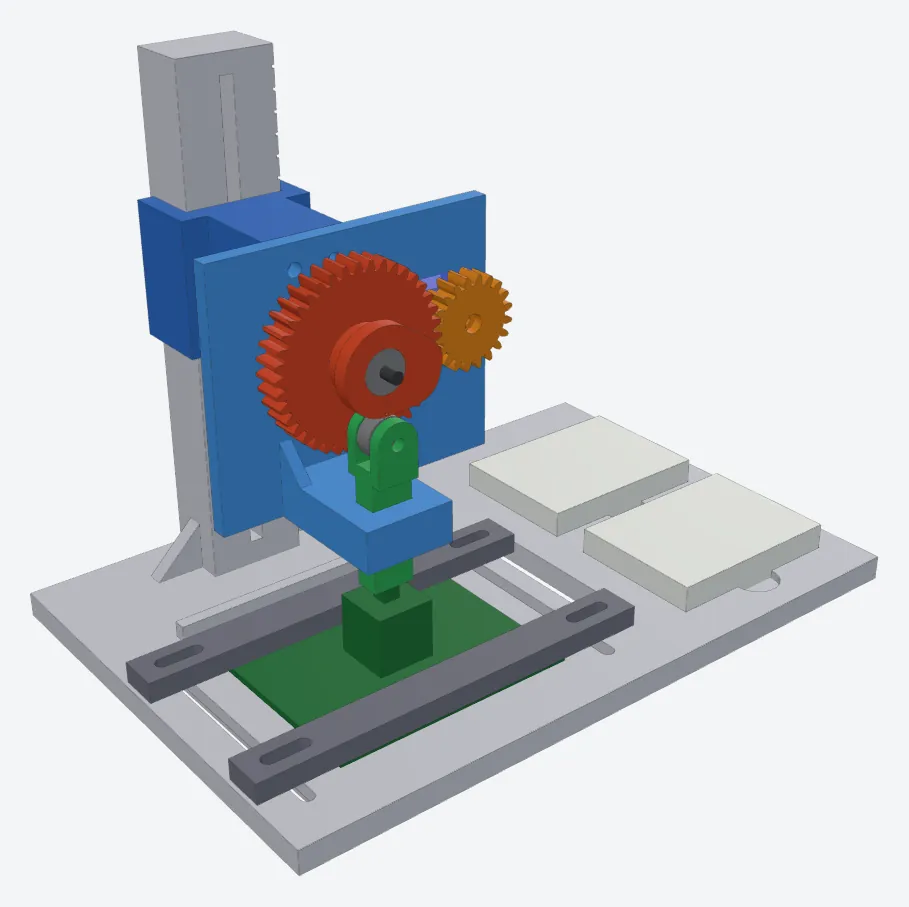
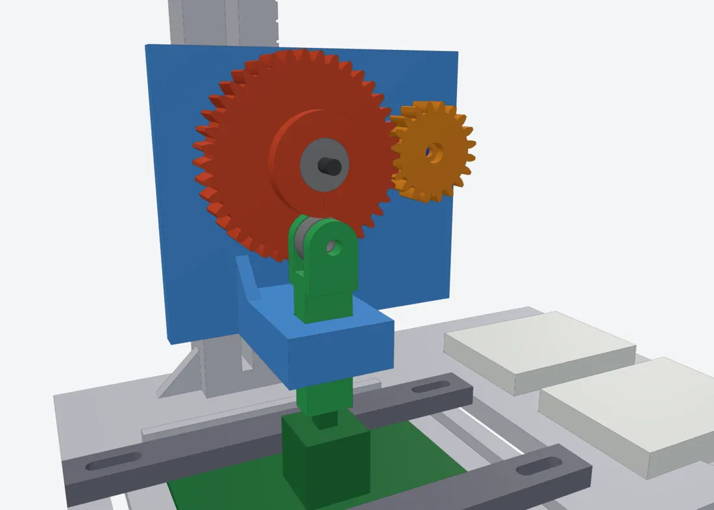

An open-source, modular, semitonal MIDI controller. I lead prototyping and PCB design. This page tracks where the build stands. Ongoing
Working from the School of Music's needs: a modular key interface and a banked key system with adjustable octave width and key layouts. An earlier ModuMIDI design is kept as reference material in the project repo.
Each key is read by a ratiometric linear Hall-effect sensor powered from 3.3 V, so its output stays inside the RP2350 microcontroller's ADC range.
A 3D-printable, servo-driven rig to press a key switch thousands of times and check that it lasts. The model, STLs, and assembly guide are finished.
33 Hall-sensor channels and the DC power jack are placed in LibrePCB. Wiring the nets is next.
The 175 × 125 mm board outline is set. Part placement and routing follow the schematic.
Order and assemble boards, write the RP2350 firmware, test with the client, and deliver in Capstone Design II.
Each key is read magnetically by a linear Hall-effect sensor. The sensor outputs an analog voltage that rests at half the supply (VCC/2) and moves as the key's magnet approaches, so the controller can read how far each key is pressed, not just whether it's on or off.
The sensors run from 3.3 V so their output never goes beyond what the RP2350's ADC can read, with a 100 nF decoupling capacitor next to each one.
LibrePCB didn't have most of the parts this build needs, so I made a library of symbols, footprints, and devices for them. Each footprint gets printed at 1:1 and checked against the real part before boards are ordered.

A servo turns a cam that pushes a guided plunger straight down onto a key switch, over and over, to test how long switches last before the build commits to them.

Happy to talk through the design, the sensing, or the test rig. Email is the fastest way to reach me.